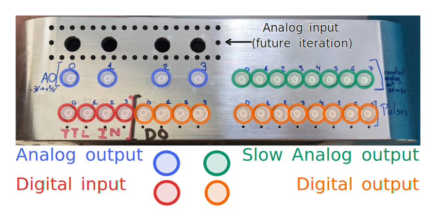

Hardware specification

Todo
Get a better picture ?
Analog output details
High-speed output
- 16-bit resolution
- From -5V to +5V
- 1 MHz update rate
Todo
[oscilloscope measurement about 0 to 65535 transition]
[ADC calibration / non-linearity]
[graph about typical noise ]
Low-speed output
- 16-bit resolution
- From 0 to 5V
- 50kHz update rate
- [graph about 0 to 65535 transition]
- [graph about noise / non-linearity ?] => how is the non-linearity handled ?
Todo
[Add plot of low speed DAC output / transition]
Digital I/Os details
- Designed for 50 Ohm impedance.
- Each connector is either input or output. There is a hardware change required to go from one to the other (soldering a resistor). By default, the Cube comes with 8+4 outputs and 4 inputs.
Inputs
- Accept 3.3V and 5V logic high (and 0V logic low).
- Minimum detectable pulse time : ~4ns (behavious might be unexpected that close to the limit).
Outputs
- 3.3V logic high - 0V logic low.
- Minimum pulse width : 4ns ( #ToBeConfirmed)
Todo
[Add plot of digital I/Os ?]